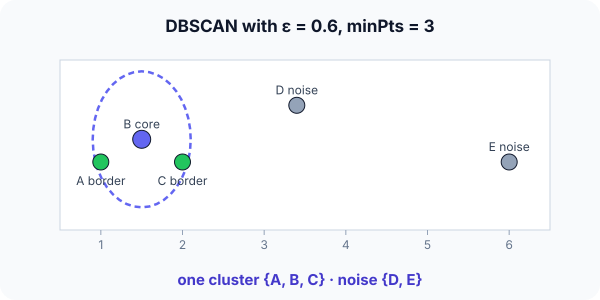

Prerequisites
- k-means, for comparison.
- Euclidean distance.
- The idea of density: many points in a small area.
The analogy
Everyday analogy
Think of a crowd photographed from above. A crowd is wherever people stand shoulder to shoulder; the people at its edge belong to it too; someone standing alone in an empty square belongs to no crowd.
DBSCAN finds crowds the same way: dense cores, their edges (borders), and the loners (noise).
How it works
Parameters: ε: the neighbourhood radius. minPts: how many points (including itself) a point needs within ε to be a core point. Here ε = 0.6, minPts = 3.
Start with classifying five points
Points A(1, 1), B(1.5, 1.2), C(2, 1), D(3.4, 1.5), E(6, 1); ε = 0.6, minPts = 3. Predict, then open "Check".
Example: predict before you read
Step 1. Which points are within 0.6 of B?
Check
A (distance ≈ 0.54), C (≈ 0.54) and B itself: 3 points. So B is a core point.
Step 2. Cover the next line and guess: how many neighbours do A and C have, and what type are they?
Check
A: {A, B}; C: {B, C}. Only 2 each, so not core. But each is within ε of the core point B, so both are border points.
Step 3. D and E. Predict their type and the final clustering.
Check
D's nearest point is C at about 1.49; E is 2.6 from D. Neither is near a core point: both are noise. One cluster {A, B, C}.

Quick recall: Before reading further, cover the text above and say out loud: what are the three kinds of points in DBSCAN?
Check your answer
Core points (at least minPts within ε), border points (not core but within ε of a core point), and noise (neither).
Finish the picture: changing ε
Same points, minPts = 3.
- ε = 1.5. Predict the types of C and D.
Check
C now has B, C and D within 1.5 (D is 1.49 away): core. D has C and D only: border of C. The cluster is {A, B, C, D}; E is still noise.
- ε = 0.4. Predict the result.
Check
Nobody has 3 points within 0.4: everything is noise. Choosing ε well matters; a k-distance plot helps.
Quick recall: Without scrolling up, say out loud: what happened when ε grew to 1.5?
Check your answer
D became reachable from C, so the cluster grew; only E stayed noise. ε sets how close points must be to count as dense.
Full worked calculation
The five points of the page, A(1, 1), B(1.5, 1.2), C(2, 1), D(3.4, 1.5), E(6, 1), labelled by hand twice: with $\varepsilon = 0.6$ and with $\varepsilon = 1.5$, both with minPts = 3 (the point itself counts).
| A | B | C | D | E | |
|---|---|---|---|---|---|
| A | 0 | 0.54 | 1.00 | 2.45 | 5.00 |
| B | 0.54 | 0 | 0.54 | 1.92 | 4.50 |
| C | 1.00 | 0.54 | 0 | 1.49 | 4.00 |
| D | 2.45 | 1.92 | 1.49 | 0 | 2.65 |
| E | 5.00 | 4.50 | 4.00 | 2.65 | 0 |
-
1Distance matrix
$$d(A, B) = \sqrt{0.5^2 + 0.2^2} = \sqrt{0.29} \approx 0.54, \qquad d(C, D) = \sqrt{1.4^2 + 0.5^2} = \sqrt{2.21} \approx 1.49$$DBSCAN only ever asks "is this pair within $\varepsilon$?", so computing all pairwise distances once is enough to answer every question below.
-
2ε = 0.6: count neighbours
$$|N(A)| = |\{A, B\}| = 2, \quad |N(B)| = |\{A, B, C\}| = 3, \quad |N(C)| = 2, \quad |N(D)| = |N(E)| = 1$$Read each row of the matrix and count the entries $\le 0.6$, including the 0 on the diagonal. Only B reaches minPts = 3.
-
3ε = 0.6: label the points
$$\text{core} = \{B\}, \qquad \text{border} = \{A, C\}, \qquad \text{noise} = \{D, E\}$$A and C are not core themselves, but each lies within 0.6 of the core point B, so they join its cluster as border points. D and E are near no core point: noise.
-
4ε = 1.5: count neighbours again
$$|N(A)| = |\{A, B, C\}| = 3, \quad |N(B)| = 3, \quad |N(C)| = |\{A, B, C, D\}| = 4, \quad |N(D)| = |\{C, D\}| = 2, \quad |N(E)| = 1$$A larger radius catches more neighbours. $d(A, C) = 1.0$ and $d(C, D) = 1.49$ are now inside the radius.
-
5ε = 1.5: label and expand the cluster
$$\text{core} = \{A, B, C\}, \qquad \text{border} = \{D\}, \qquad \text{noise} = \{E\}$$Starting from core point A, DBSCAN adds its neighbours B and C, and since both are core, their neighbours too, which brings in D. D is only a border point: it can join, but cannot extend the cluster further.
-
6Why E stays noise
$$\min_j d(E, j) = d(E, D) = 2.65 > 1.5$$E has no neighbour within $\varepsilon$ at all, so no core point can reach it. DBSCAN reports it as an outlier instead of forcing it into a cluster, which k-means could not do.
What the numbers tell us
With $\varepsilon = 0.6$: one small cluster {A, B, C} and two noise points. With $\varepsilon = 1.5$: one cluster {A, B, C, D}, and only E is noise.
The result depends strongly on $\varepsilon$. A common way to choose it is to sort every point's distance to its $k$-th nearest neighbour and pick the "elbow" of that curve.
The rule in plain words
Find every core point (≥ minPts neighbours within ε). Connect core points that are within ε of each other: each connected group is a cluster.
Attach non-core points within ε of a core point as border points of that cluster; everything else is noise.
Quick recall: Before you read the code, describe how to decide whether a point is core, in your own words. Then check below.
Check your answer
Count the points (including itself) within distance ε of it; it is core if that count is at least minPts.
The code
Read this code after you have labelled the five points by hand. It will make more sense.
int region_count(double x[], double y[], int n, int p, double eps) { /* includes p itself */
int c = 0;
for (int i = 0; i < n; i++)
if ((x[i]-x[p])*(x[i]-x[p]) + (y[i]-y[p])*(y[i]-y[p]) <= eps * eps) c++;
return c;
}void point_types(double x[], double y[], int n, double eps, int min_pts, int type[]) {
for (int p = 0; p < n; p++) /* 2 = core, 0 = not (yet) */
type[p] = region_count(x, y, n, p, eps) >= min_pts ? 2 : 0;
for (int p = 0; p < n; p++) /* 1 = border: near some core point */
for (int q = 0; q < n; q++)
if (type[p] == 0 && type[q] == 2 &&
(x[p]-x[q])*(x[p]-x[q]) + (y[p]-y[q])*(y[p]-y[q]) <= eps * eps) type[p] = 1;
}Definition
What you just did, in one line: DBSCAN (density-based spatial clustering of applications with noise) forms clusters from dense regions: core points with at least minPts neighbours within ε, the border points around them, and labels the rest as noise.
flowchart TD
A["point p"] --> B{"at least minPts points within ε?"}
B -->|yes| C["core point: starts or extends a cluster"]
B -->|no| D{"within ε of some core point?"}
D -->|yes| E["border point: joins that cluster"]
D -->|no| F["noise"]
How costly is it?
Quick recall: Before looking at the formula, predict: does DBSCAN need the number of clusters in advance?
Check your answer
No. The clusters emerge from connected dense regions.
The ε-neighbourhood of a point and the core condition:
$$N_\varepsilon(p) = \{\, q : \lVert p - q \rVert \le \varepsilon \,\}, \qquad p \text{ is core} \iff |N_\varepsilon(p)| \ge \text{minPts}$$| Phase | Cost | Why |
|---|---|---|
| Neighbourhood queries, brute force | $O(n^2)$ | Every point against every point |
| With a spatial index (low dimensions) | about $O(n \log n)$ | Fast range queries |
| Memory | $O(n)$ | Labels and the queue of points to expand |
Best for: spatial or low-dimensional data with irregularly shaped clusters and outliers, such as GPS points or anomaly detection.
- Pro: Finds clusters of any shape and the number of clusters automatically.
- Pro: Explicitly labels outliers as noise.
- Con: Sensitive to ε and minPts, and struggles when clusters have very different densities.
- Con: Distances lose meaning in high dimensions, like other distance-based methods.
Warning
A single ε can't fit clusters of very different densities: an ε small enough to separate the dense clusters will label the sparse cluster as noise. HDBSCAN handles varying densities better.
Exam tip
Make a table: point, number of neighbours within ε, core?, near a core?, final type. Remember that minPts usually counts the point itself; state the convention you use.
Common mistakes
- Forgetting that a point counts as its own neighbour (or double-counting it), which changes core decisions.
- Calling every non-core point noise; border points belong to clusters.
- Not scaling features, so ε means different things in different directions.
Try it yourself
Exercise 1 (warm-up)
With ε = 0.6 and minPts = 2, classify the five points.
Hint
Now two points in a neighbourhood are enough.
Answer
A, B, C are all core (each has at least one neighbour besides itself), forming one cluster. D and E are still noise.
Exercise 2 (a bit harder)
Two rings of points, one inside the other. Which separates them correctly, k-means with $k = 2$ or DBSCAN, and why? Write your answer down before you open it.
Show answer
DBSCAN: points along each ring are densely connected, so each ring becomes one cluster. k-means cuts the rings with a straight boundary, because it assumes round clusters around centroids.
Did you know?
Did you know?
DBSCAN was published by Ester, Kriegel, Sander and Xu in 1996 and won the test-of-time award at the KDD conference in 2014.
It is popular in geographic analysis: grouping GPS pings into "places" (home, work, a café) with noise for travel in between.
Key points to remember
If you remember one thing from each line, remember the because.
- Clusters are dense regions because points join clusters through chains of core points.
- The number of clusters is automatic because it is the number of connected dense regions.
- Outliers are labelled noise because they are neither dense nor near a dense point.
- Any shape is possible because clusters grow along density, not around a centre.
- ε and minPts matter a lot because together they define what "dense" means.
Self-check questions
Answer these in order, out loud. They follow the page, so your answers become the script of your video.
- How is DBSCAN like spotting crowds from above?
Sample answer
Crowds are where people stand close together; people at the edges belong to them, and someone alone is not in any crowd.
- Classify A, B, C, D, E with ε = 0.6 and minPts = 3.
Sample answer
B is core; A and C are border points of B's cluster; D and E are noise. One cluster {A, B, C}.
- Why does
point_typesfind core points in a first loop before labelling borders?A good answer mentions what "border" depends on.
Sample answer
A border point is defined by being near a core point, so all core points must be known first.
- So what is DBSCAN, in one sentence?
Sample answer
A density-based clustering method that grows clusters from core points with enough neighbours within ε and labels sparse points as noise.
- Why can DBSCAN find ring-shaped clusters while k-means can't?
A good answer compares "around a centre" with "connected by density".
Sample answer
k-means assigns each point to its nearest centre, so clusters are round blobs. DBSCAN links neighbouring dense points, so a cluster can follow any shape.
- What does DBSCAN cost?
Sample answer
$O(n^2)$ with brute-force neighbourhood search, about $O(n \log n)$ with a spatial index in low dimensions.
- Give two pros and two cons.
Sample answer
Pros: any shape, automatic number of clusters, explicit noise. Cons: sensitive to ε and minPts, and weak with varying densities or high dimensions.
- If you had to teach this to a friend in 2 minutes, what would you leave out, and why?
Sample answer
I'd leave out the complexity and HDBSCAN. I'd keep the crowd analogy, the five-point classification, and "core, border, noise; clusters are dense regions".
External resources
- scikit-learn: DBSCAN: parameters and examples.
- Naftali Harris: Visualizing DBSCAN: an interactive demo on tricky shapes.
- Wikipedia: DBSCAN: definitions and algorithm.
Videos
- YouTube search: StatQuest DBSCAN: StatQuest's visual explanation.